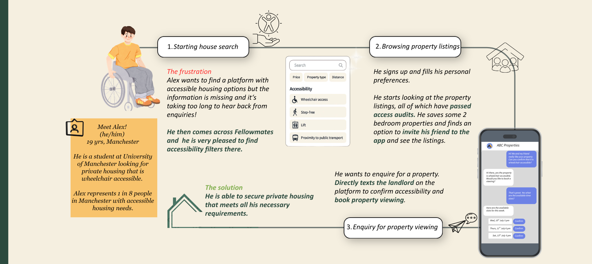

Verification cost overruns past the modeled 25%
Overview
I. Problem and User Validation
The Gap
Rightmove, Zoopla and the other major portals compete on listing volume, not on accessibility. None surface verified step-free access, lift availability, or transport proximity — so students with accessibility needs are left checking 3–5 platforms per search, cold-emailing landlords to confirm basics, and frequently getting no answer at all.
The scale of the gap: 1 in 3 disabled people in private rented housing live in unsuitable accommodation (Habinteg, 2020). In Manchester specifically, 19% of University of Manchester students are disabled, and roughly 12,000 students across the city have an accessibility housing need. The pattern this produces is consistent: longer searches, higher rejection risk, and students settling for properties that don't actually meet their needs.
Target Audience
The primary persona: Alex, 19, a University of Manchester student who uses a wheelchair and is searching for private housing near campus. His journey — from a frustrating multi-platform search to a verified, confirmed match — maps the product's core loop end to end.

II. The Solution and Value Exchange
FellowMates is designed as a two-sided marketplace: students get verified, filterable listings; landlords get a pre-qualified tenant pipeline. A third-party verification layer is what makes the trust work in both directions.
Students
- Verified accessibility filters — no more relying on unconfirmed listing text
- Transparent breakdown of rent, bills, barriers and guarantor requirements upfront
- Direct landlord enquiry and viewing booking inside the platform
Landlords & agents
- A pre-qualified tenant pipeline instead of unfiltered enquiries
- Reduced void periods during peak student intake
- Less back-and-forth — accessibility questions are answered before first contact
Verification layer
- Access audits delivered through partners such as the Centre for Accessible Environments and Accessible Property Registers
- Standardised criteria, so a "verified" listing means the same thing everywhere on the platform
- The trust layer both sides of the marketplace are actually paying for
III. Market Sizing and Phased Go-to-Market
Market Funnel
TAM
80,000
Students in Greater Manchester with a housing need.
SAM
12,000
Disabled students in Manchester actively seeking private accommodation.
SOM
100–150
Students onboarded in Q1 via university disability services and accessible property partners.
Execution Roadmap
Q1
MVP launch. Seed 20–30 Manchester landlords, partner with accessible-property registers, onboard 100–150 students.
Q2
Expand supply to 50–80 properties, run user research to test market fit, grow to 500+ students.
Q3
Scale acquisition past 1,000 students and grow the landlord network past 100.
Q4
Check profitability trajectory against the model, then expand to other student cities.
Competitive Positioning
Unified
Platform
Platform
Rightmove
Housr
Zoopla
HomefinderUK
Facebook
FellowMates
Low accessibility focusHigh accessibility focus
No major platform combines a unified listing experience with a genuine accessibility focus — the closest competitors (Rightmove, Zoopla, Housr) sit high on breadth but low on verified accessibility data; the accessibility-adjacent options (HomefinderUK, informal Facebook groups) aren't unified platforms at all.
IV. Unit Economics and Commercial Viability
| Metric | Value | Strategic note |
|---|---|---|
| Average match value | £4,500 | 9-month student lease @ £500/month |
| Take rate / commission | 5% (£225 revenue) | Paid by the landlord on a successful tenancy |
| Verification & CAC | £56.25 audit (25%) + £5 CAC | Variable cost per match |
| Gross margin | £138.75–£148.75 (62–66%) | High-margin, marketplace-style profile |
| Fixed overhead | £3,400 / month | 2 FTE, plus infrastructure, support, marketing, compliance |
| Breakeven volume | 24 matches / month | A low bar to clear before the model turns profitable |
V. Risk Matrix and Strategic Mitigations
Risk
Mitigation
Standardise audits with an in-house checklist, and negotiate volume discounts by batching properties
Risk
Landlords resist the 5% commission
Mitigation
Introduce tiered, introductory rates framed around the vacancy reduction landlords actually get
Risk
University partnerships onboard too slowly
Mitigation
Acquire direct-to-student through grassroots community and disability-charity channels, backed by referral incentives
Scope Note
FellowMates was designed as a theoretical venture framework and market opportunity analysis rather than an active deployment. Reflecting on the model, the primary operational vulnerability lies in the initial pilot phase: on-the-ground verification logistics, landlord acquisition friction, and university integration timelines would likely introduce higher upfront costs and operational complexity than the baseline projections assume. A live iteration would require stress-testing the fixed-cost assumptions against localized operational challenges and piloting smaller, manual verification loops before automating the marketplace.